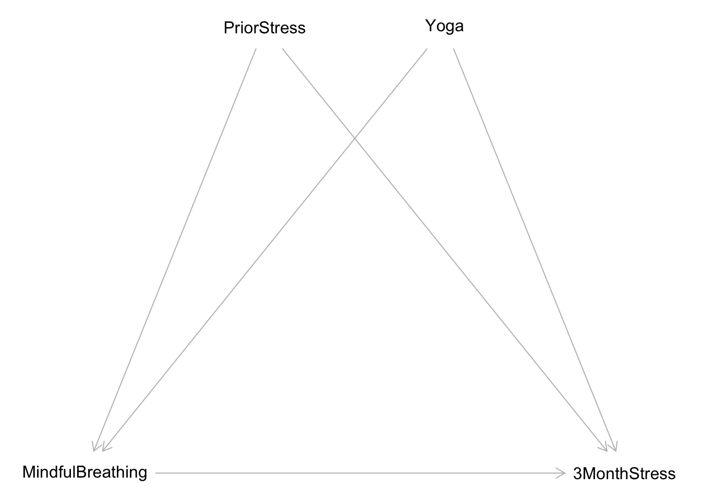
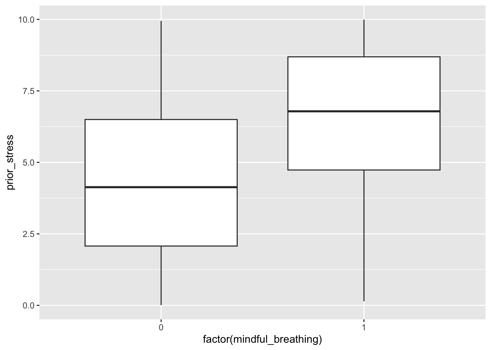
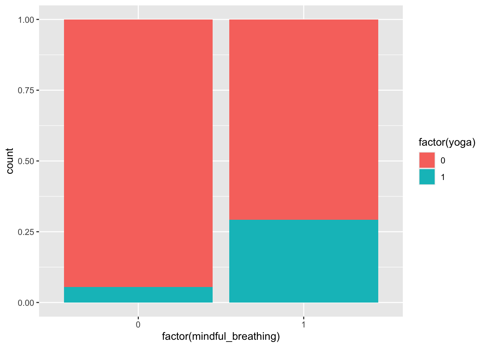

library(tidyverse)
library(scales)
library(broom)
library(dagitty)Simulating data using causal graphs
Goals
- Explain how associations arise from different structures in causal graphs
- Gain confidence exploring statistical properties via simulation
You can download a template file for this activity here.
Review
Structure of causal graphs
The fact that causal graphs depict a data-generating process means that it conveys statistical information about the relationships between variables.
3 structures form the basis of every pattern in a causal graph:
- Chains:
A -> B -> C - Forks:
A <- B -> C(B is a common cause) - Colliders:
A -> B <- C(B is a common effect)
Examples
Note: I asked ChatGPT to help me generate examples of these structures in different contexts with the following prompt:
Give me an example of a [chain,fork,collider] causal graph structure in the following contexts: mental health, sociology, biology, medicine, public health, economics, politics.
Chains:
- Mental Health: Childhood Trauma -> Depression -> Substance Abuse
- Sociology: Education Level -> Employment Status -> Income Level
- Biology: Gene Mutation -> Protein Dysfunction -> Disease Onset
- Medicine: Infection -> Immune Response -> Fever
- Public Health: Air Pollution -> Respiratory Problems -> Hospital Admissions
- Economics: Interest Rate Changes -> Investment Levels -> Economic Growth
- Politics: Political Campaign -> Public Opinion -> Election Outcome
Forks:
- Mental Health: Depression <- Genetic Predisposition -> Anxiety
- Sociology: Children’s Socioeconomic Status <- Parental Education Level -> Children’s Educational Attainment
- Biology: Weight Gain <- Hormonal Imbalance -> Fatigue
- Medicine: Cardiovascular Disease <- Poor Diet -> Obesity
- Public Health: Health Outcomes <- Socioeconomic Status -> Access to Healthcare
- Economics: Consumer Spending <- Economic Recession -> Unemployment Rates
- Politics: Voting Behavior <- Political Polarization -> Media Consumption
Colliders:
- Mental Health: Genetic Predisposition -> Depression <- Life Stressors
- Sociology: Educational Attainment -> Income Level <- Social Network
- Biology: Gene Mutation -> Disease Onset <- Environmental Factors
- Medicine: Lack of Physical Activity -> Obesity <- Poor Diet
- Public Health: Air Pollution -> Respiratory Problems <- Smoking
- Economics: Economic Policies -> Inflation Rate <- Global Market Conditions
- Politics: Campaign Funding -> Election Outcome <- Public Opinion
Marginal and conditional (in)dependence in causal graphs
- Chains, forks, and colliders have different patterns of marginal and conditional independence and dependence.
- These patterns are the core of what makes something an alternate explanation and how we can address that alternate explanation through analysis (coming next time).
- The marginal/conditional (in)dependence properties are not intuitive, but we can see them play out via simulation.
Simulation
- When conducting simulations, we are in control of the data-generating process.
- We control the distribution of all variables and how they are related to each other.
- We can simulate data from a causal graph by:
- Simulate variables that don’t have causes (called exogenous variables)
- Example: In the chain
X -> Y -> Z, we would simulateXfirst.
- Example: In the chain
- Simulate the variables caused by the exogenous variables. Then simulate the variables caused by these variables, etc.
- Example: In the chain
X -> Y -> Z, after simulatingX, simulateYthenZ.
- Example: In the chain
- Simulate variables that don’t have causes (called exogenous variables)
Simulating quantitative and categorical variables
This table at the end of our reading provides a nice summary of simulation functions.
For quantitative variables we can use:
rnorm()runif()rescale()(This function is part of thescalespackage.)
For categorical variables we can use:
rbinom(): For binary variablessample(): For 3+ categories
We can look up the documentation for functions by entering ?function_name in the Console. Use the documentation for these functions to complete the following exercises:
# Set seed for random number generator for reproducible results
set.seed(451)
# Simulate 1000 normally distributed numbers with mean 10 and standard deviation 2. Store as variable X
X <-
# Check distribution of X with a plot (code is complete)
ggplot(data.frame(X), aes(x = X)) +
geom_histogram()
# Simulate 1000 uniformly distributed numbers between 10 and 20. Store as variable Y
Y <-
# Check distribution of Y with a plot (code is complete)
ggplot(data.frame(Y), aes(x = Y)) +
geom_histogram()
# Rescale X to be between 0 and 1. Store as variable Z
Z <-
# Check distribution of Y with a plot (code is complete)
ggplot(data.frame(Z), aes(x = Z)) +
geom_histogram()Simulating dependence
We can use regression model formulas to have the mean of a variable depend on its causes.
For the mean of quantitative variables:
\[
E[\text{score} \mid \text{hoursPractice}, \text{reviewSession}] = 40 + 3\times\text{hoursPractice} + 10\times \text{reviewSessionYes}
\] The mean of a binary (0/1) variable is the probability that it equals 1. We can use a similar regression model formula to determine this probability and use rescale() to force this number to be between 0 and 1.
Example
We’ll simulate data from this causal graph:
dag <- dagitty("dag {
bb=\"0,0,1,1\"
3MonthStress [outcome,pos=\"0.800,0.500\"]
MindfulBreathing [exposure,pos=\"0.200,0.500\"]
PriorStress [pos=\"0.400,0.250\"]
Yoga [pos=\"0.600,0.250\"]
MindfulBreathing -> 3MonthStress
PriorStress -> 3MonthStress
PriorStress -> MindfulBreathing
Yoga -> 3MonthStress
Yoga -> MindfulBreathing
}")
plot(dag)
Simulation code:
set.seed(451)
n <- 1000
sim_data <- tibble(
prior_stress = runif(n, min = 0, max = 10),
yoga = rbinom(n, size = 1, prob = 0.15),
p_mindful_breathing = rescale(1 + 3*prior_stress + 25*yoga, to = c(0,1)),
mindful_breathing = rbinom(n, size = 1, prob = p_mindful_breathing),
mean_stress_3_month = prior_stress - 3*yoga - 5*mindful_breathing,
noise_stress_3_month = rnorm(n, mean = 0, sd = 2),
stress_3_month = mean_stress_3_month + noise_stress_3_month
)It’s important to use plots and models to check the relationships in the data we generated:
ggplot(sim_data, aes(x = factor(mindful_breathing), y = prior_stress)) +
geom_boxplot()
ggplot(sim_data, aes(x = factor(mindful_breathing), fill = factor(yoga))) +
geom_bar(position = "fill")
mod <- lm(stress_3_month ~ yoga + prior_stress + mindful_breathing, data = sim_data)
summary(mod)
Call:
lm(formula = stress_3_month ~ yoga + prior_stress + mindful_breathing,
data = sim_data)
Residuals:
Min 1Q Median 3Q Max
-6.1686 -1.2857 -0.0591 1.2766 7.5840
Coefficients:
Estimate Std. Error t value Pr(>|t|)
(Intercept) 0.1353 0.1285 1.053 0.293
yoga -2.7436 0.1903 -14.416 <2e-16 ***
prior_stress 0.9931 0.0235 42.259 <2e-16 ***
mindful_breathing -5.1820 0.1475 -35.131 <2e-16 ***
---
Signif. codes: 0 '***' 0.001 '**' 0.01 '*' 0.05 '.' 0.1 ' ' 1
Residual standard error: 1.943 on 996 degrees of freedom
Multiple R-squared: 0.7494, Adjusted R-squared: 0.7487
F-statistic: 993 on 3 and 996 DF, p-value: < 2.2e-16Long-run properties via simulation
Suppose that X and Y are independent quantitative variables. Suppose that we fit the model below:
\[E[Y \mid X] = \beta_0 + \beta_1 X\]
- Let our significance level (type I error rate) be 0.05. What would you expect about the p-value for the coefficient on X?
- Now suppose that you have 1000 different samples of X and Y and fit the above model on each sample. What would you expect about the 1000 p-values?
Response
If X and Y are independent, the null hypothesis \(H_0: \beta_1 = 0\) is true. A significance level (type I error rate) of 0.05 means that we’re choosing our test statistic threshold to be high enough that, if the null hypothesis were true, we would (incorrectly) reject the null 5% of the time.
We reject the null when p-value < 0.05. Since the null is true in this case, this will happen (p-value < 0.05) in 5% of samples. So we’re expecting 50 of the 1000 samples to give p-values less than 0.05.
Exercises
Throughout these exercises, use a sample size of 10,000, a significance level of 0.05, and 1000 simulations.
Use linear regression model formulas to create relationships between variables. Don’t use nonlinearity or interaction terms. (We’re using this restriction today because we’ll be using linear regression models to test for conditional independence and dependence.) The specific numbers in your model formulas are up to you, but don’t worry too much about ensuring that the distributions and relationships are fully realistic.
Exercise 1: chains
In the code chunk below, write code to simulate a single dataset from the following chain:
Age -> Total hours reading practice -> Reading ability
# Simulate data from the chain
# Store data in a dataset called sim_data_chain
# Call your variables age, practice_hrs, read_ability
# Use plots to verify that univariate distributions look ok and that the direct causal relationships look rightCopy and paste the code that creates the sim_data_chain dataset into the space indicated in the function below. Then complete the next block of code to fit an appropriate model for checking how age and reading ability are related conditional on hours of practice. The remainder of the code looks at the p-values from 1000 simulations.
simulate_chain <- function() {
n <- 10000
# Paste your code for creating your simulated chain data here
sim_data_chain <- ___
# Fit a linear regression model that allows you to see
# the relationship between read_ability and age
# conditional on practice_hrs
mod <- ___
# Pull out the p-value for the age coefficient
tidy(mod) %>%
filter(term=="age") %>%
pull(p.value)
}
# Repeat the simulation 1000 times (generate 1000 datasets)
set.seed(451)
system.time({
chain_pvals <- replicate(1000, {
simulate_chain()
})
})
# How many times were the p-values less than 0.05?
# Is this what you expected?
table(chain_pvals < 0.05)Exercise 2: forks
In the code chunk below, write code to simulate a single dataset from the following fork:
% of population wearing shorts <- Temperature -> Ice cream sales
# Simulate data from the fork
# Store data in a dataset called sim_data_fork
# Call your variables perc_shorts, temperature, ice_cream_sales
# Use plots to verify that univariate distributions look ok and that the direct causal relationships look rightCopy and paste the code that creates the sim_data_fork dataset into the space indicated in the function below. Then complete the next block of code to fit an appropriate model for checking how age and reading ability are related conditional on hours of practice. The remainder of the code looks at the p-values from 1000 simulations.
simulate_fork <- function() {
n <- 10000
# Paste your code for creating your simulated fork data here
sim_data_fork <- ___
# Fit a linear regression model that allows you to see
# the relationship between % shorts and ice cream sales
# conditional on temperature
mod <- ___
# Pull out the p-value for the perc_shorts coefficient
tidy(mod) %>%
filter(term=="perc_shorts") %>%
pull(p.value)
}
# Repeat the simulation 1000 times (generate 1000 datasets)
set.seed(451)
system.time({
fork_pvals <- replicate(1000, {
simulate_fork()
})
})
# How many times were the p-values less than 0.05?
# Is this what you expected?
table(fork_pvals < 0.05)Exercise 3: colliders
In the code chunk below, write code to simulate a single dataset from the following collider:
Smoking -> Hospitalization <- COVID-19 Infection
# Simulate data from the collider
# Store data in a dataset called sim_data_collider
# Call your variables covid, hosp, smoking
# Use plots to verify that univariate distributions look ok and that the direct causal relationships look right
# Also use a plot and/or model to verify the marginal relationship between covid and smokingCopy and paste the code that creates the sim_data_collider dataset into the space indicated in the function below. Then complete the next block of code to fit an appropriate model for checking how age and reading ability are related conditional on hours of practice. The remainder of the code looks at the p-values from 1000 simulations.
- Note: You may have to increase the magnitude of the
smoking -> hospeffect and the magnitude of thecovid -> hospeffect to see the expected behavior. - If you end up updating the numbers in your model formulas in light of the above note, try adding arguments to your function like this:
simulate_collider <- function(smoking_effect, covid_effect)- This allows
smoking_effectandcovid_effectto be inputs to your function. Replace the appropriate numbers in yoursim_data_collidercode to usesmoking_effectandcovid_effect. - You’ll then need to update the 1000 simulations part to something like:
set.seed(451)
system.time({
collider_pvals <- replicate(1000, {
simulate_collider(smoking_effect = 10, covid_effect = 10)
})
})simulate_collider <- function() {
n <- 10000
# Paste your code for creating your simulated collider data here
sim_data_collider <- ___
# Fit a linear regression model that allows you to see
# the relationship between smoking and covid
# conditional on hospitalization
mod <- ___
# Pull out the p-value for the smoking coefficient
tidy(mod) %>%
filter(term=="smoking") %>%
pull(p.value)
}
# Repeat the simulation 1000 times (generate 1000 datasets)
set.seed(451)
system.time({
collider_pvals <- replicate(1000, {
simulate_collider()
})
})
# How many times were the p-values less than 0.05?
# Is this what you expected?
table(collider_pvals < 0.05)Exercise 4: beyond building blocks
Can we extend building block thinking to longer, more complex structures? Let’s investigate here (conceptually, no simulation).
Consider the longer structure
A <- B <- C -> D. What do you expect about marginal/conditional (in)dependence ofAandD? Explain.Consider the longer structure
A -> B <- C <- D -> E. What do you expect about marginal/conditional (in)dependence ofAandE? Explain.
Reflection
- How do the ideas from today fit into the big picture so far?
- What questions remain?